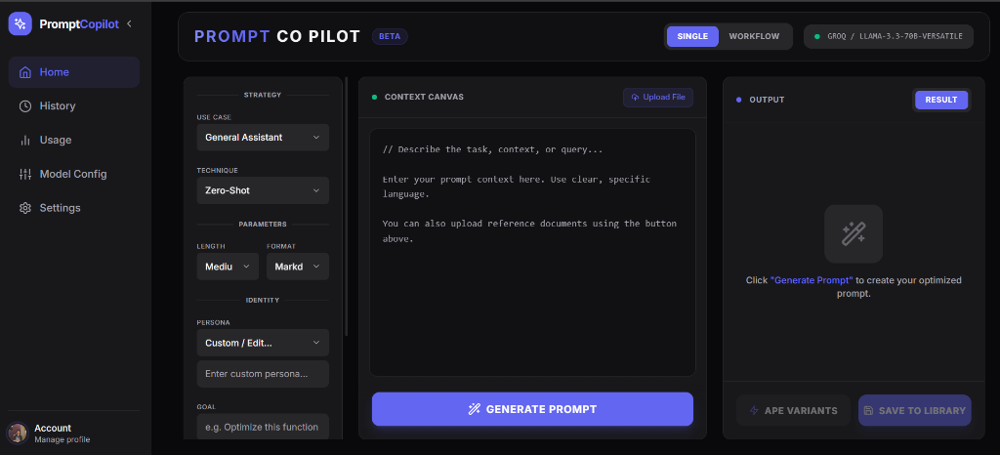

Prompt Co-pilot
SaaS ProductAI Prompt Engineering IDE — Building reliable AI features is hard because simple chat interfaces aren't designed for engineering. PromptCopilot solves this by treating prompts like code. It's a dedicated workbench where developers can draft, test, and version-control their LLM prompts.
Key Feature: Uses an "Auto-Prompt Engine" (APE) to rewrite basic ideas into professional, optimized prompts automatically.